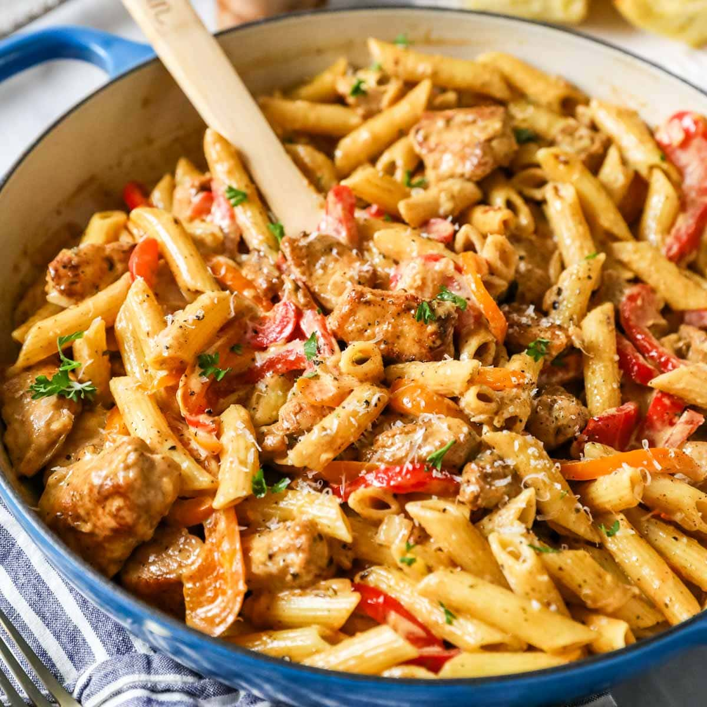

Dat Cajun
Homepage

High protein chicken or shrimp
- 1 lb chicken breast, cooked and sliced
- 8 oz high-protein pasta (like chickpea or lentil pasta)
- 1 cup plain Greek yogurt (nonfat or 2%)
- 1/2 bell pepper, diced
- 1/4 onion, diced
- 2 cloves garlic, minced
- 1/2 cup shredded cheese (cheddar or parmesan)
- Cajun seasoning (to taste)
- Olive oil spray (optional)
Instructions
- Cook pasta according to package directions. Drain and set aside.
- In a pan, sauté onion, bell pepper, and garlic until soft (3 to 5 mins).
- Add cooked chicken and sprinkle Cajun seasoning. Stir to coat.
- In a bowl, mix Greek yogurt and more Cajun seasoning to taste.
- Combine everything: pasta, sautéed mix, and yogurt sauce.
- Top with shredded cheese and stir over low heat until melted.
- Divide into 5 containers. Optionally top with chopped parsley.
Storage
- Keeps in fridge for 4 - 5 days!